Feed
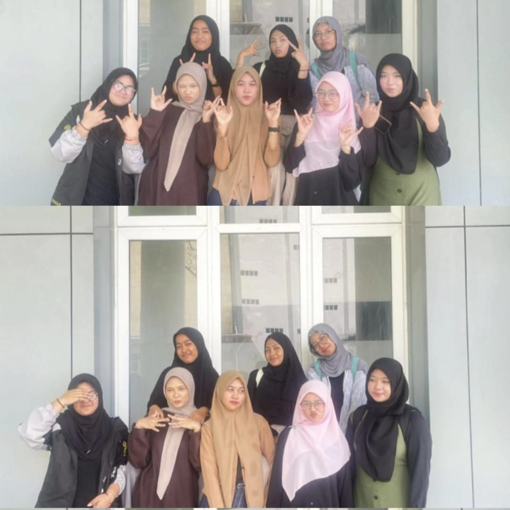
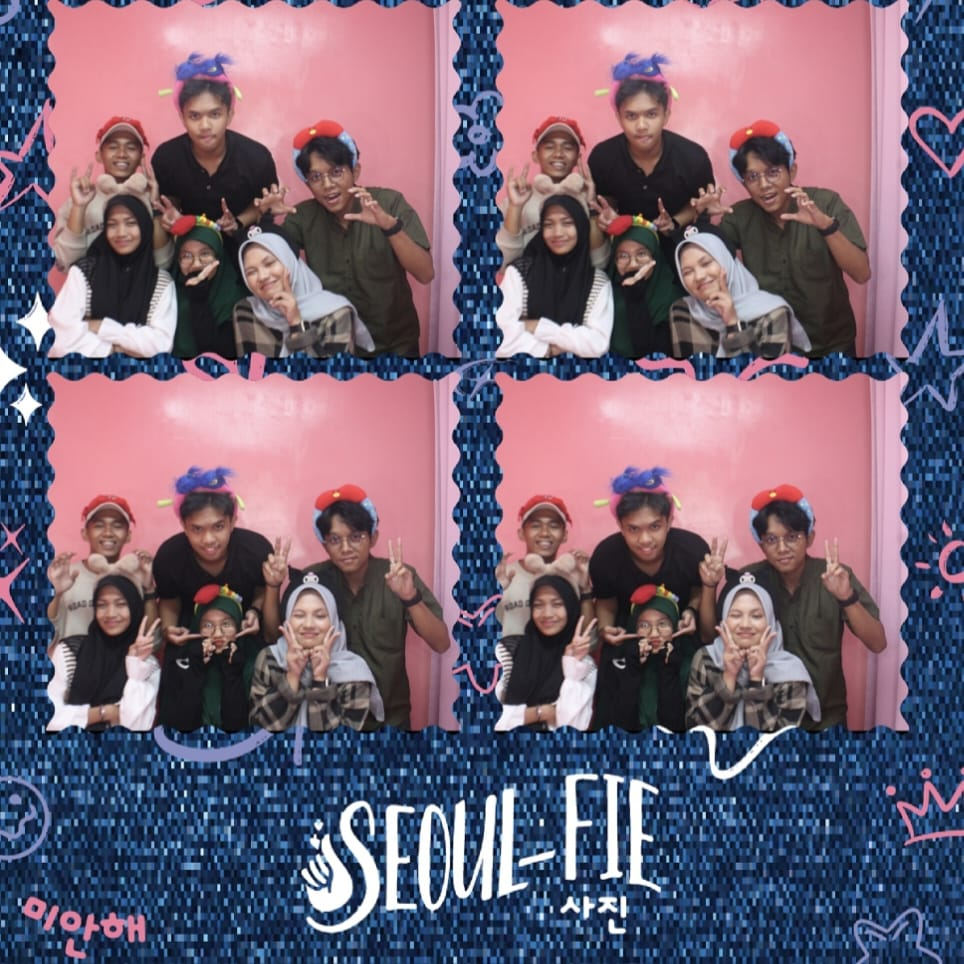
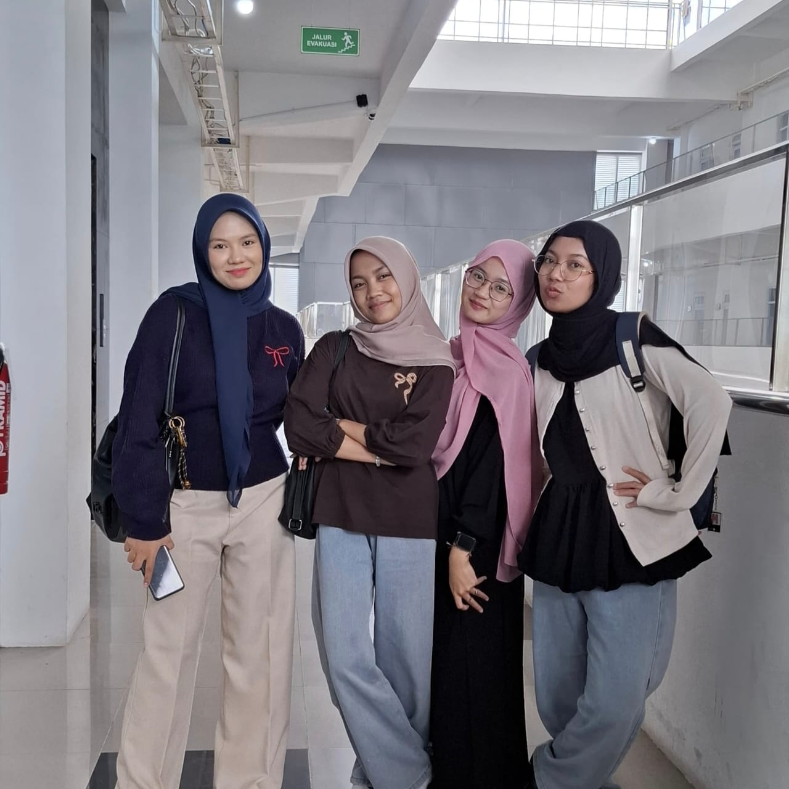
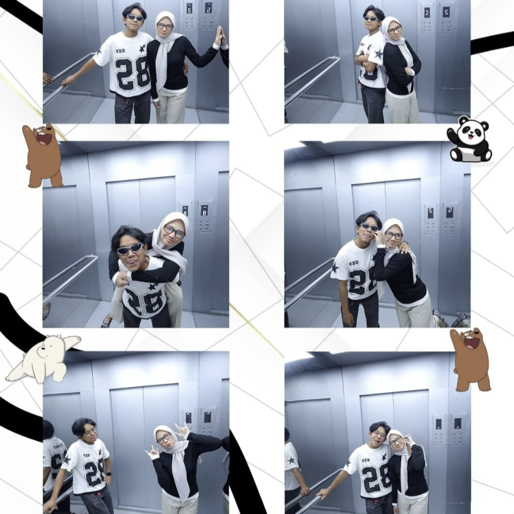
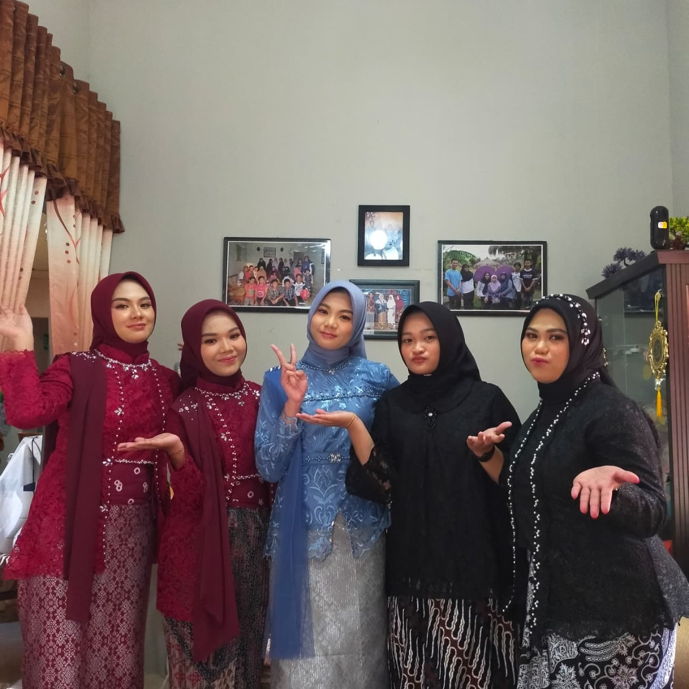
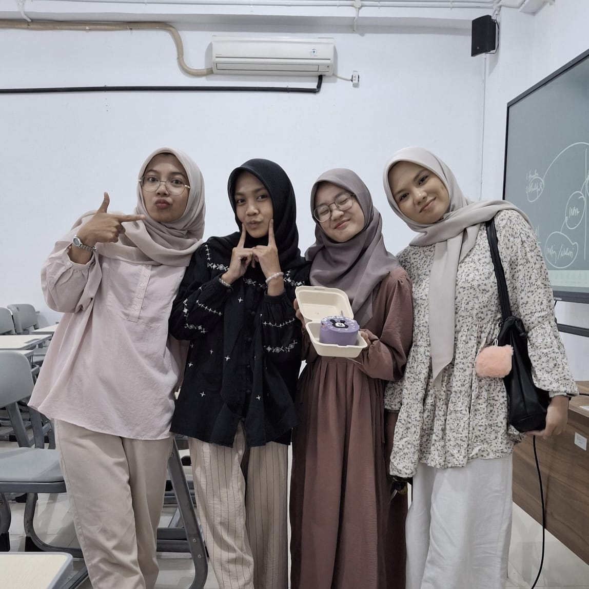
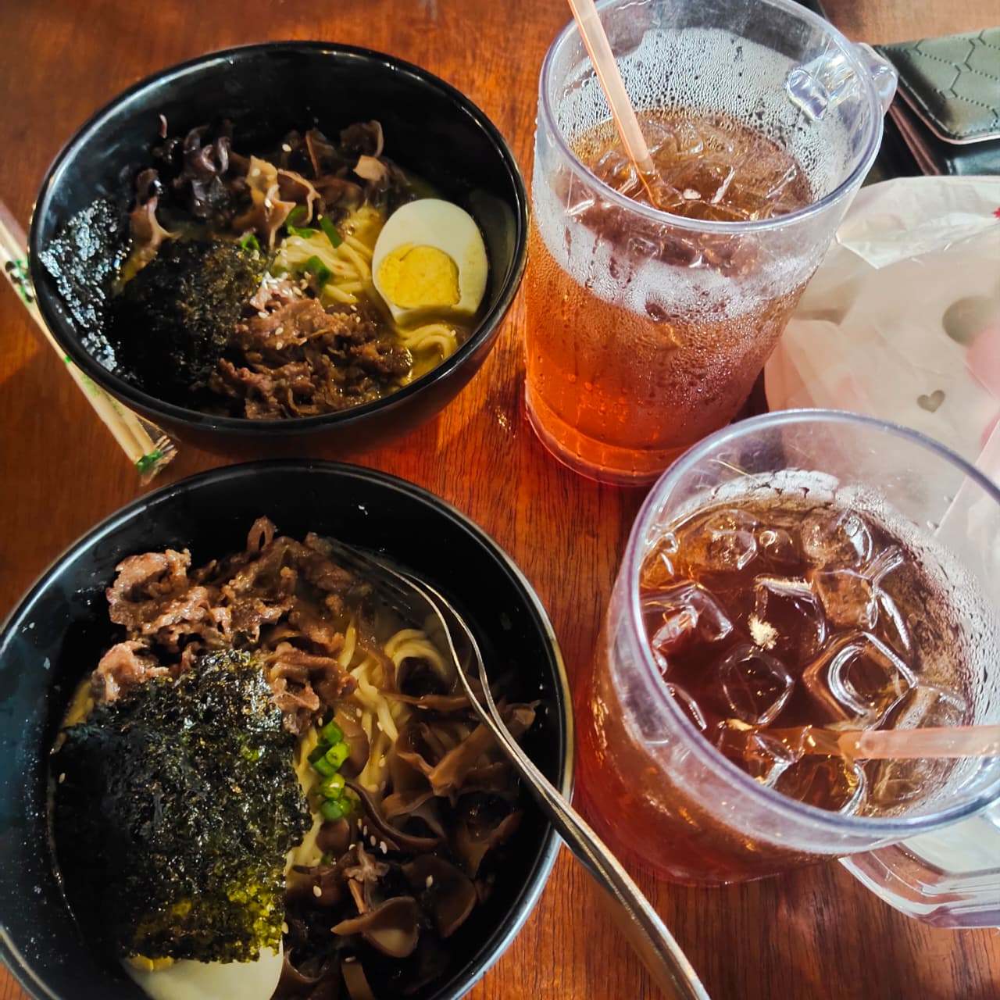
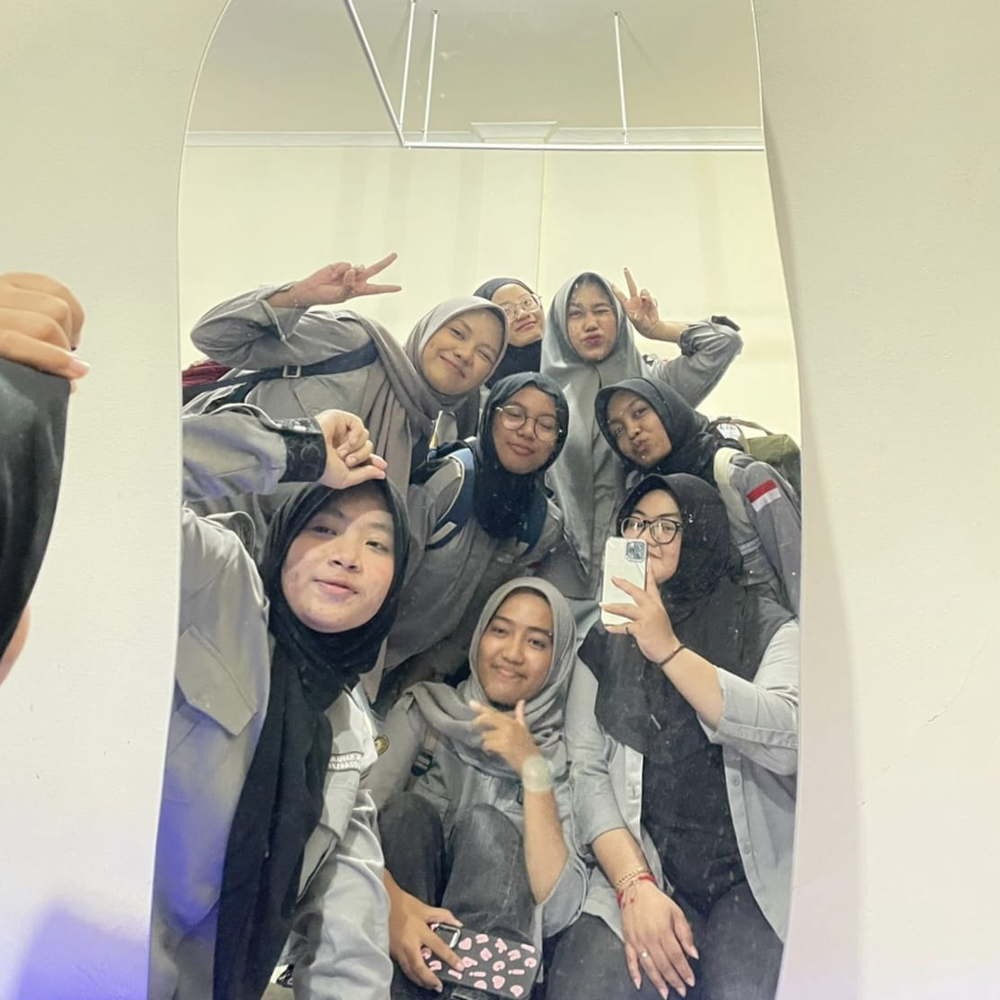
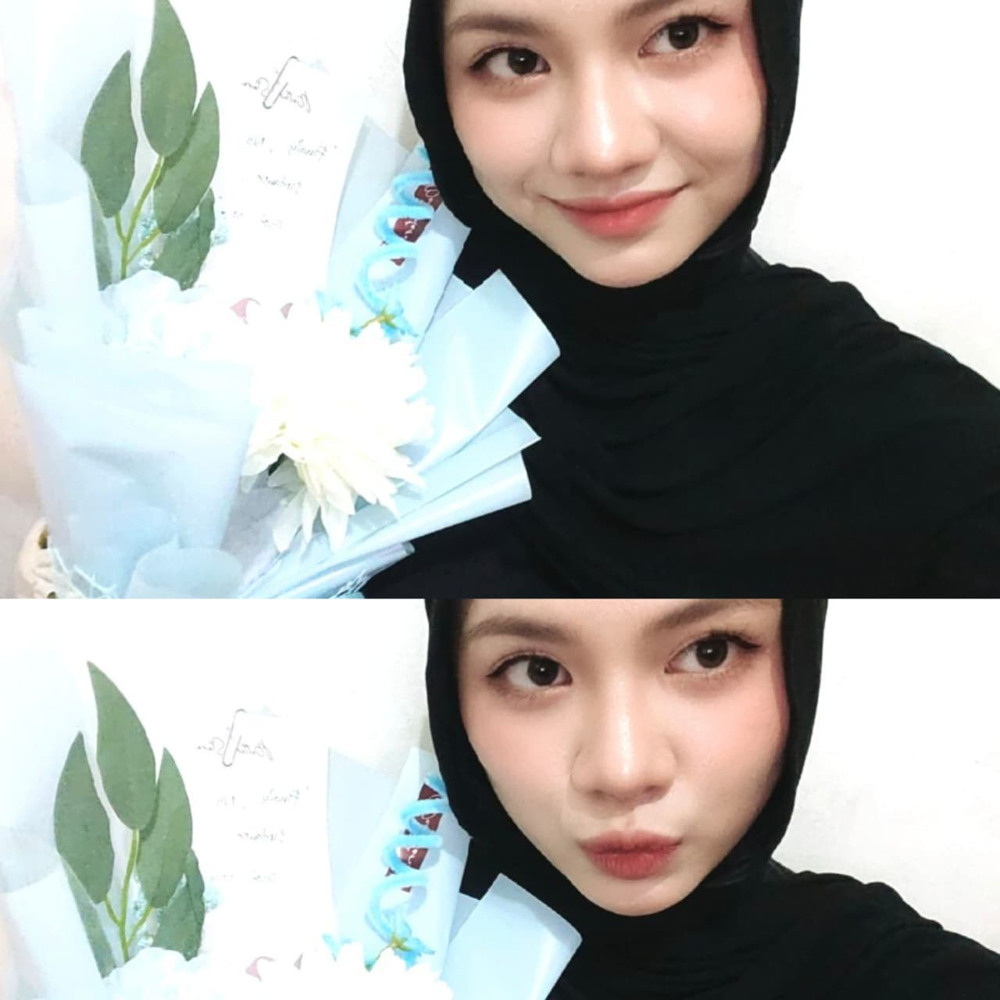
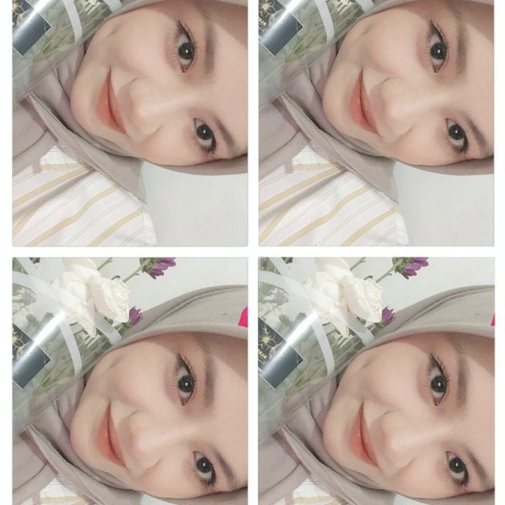
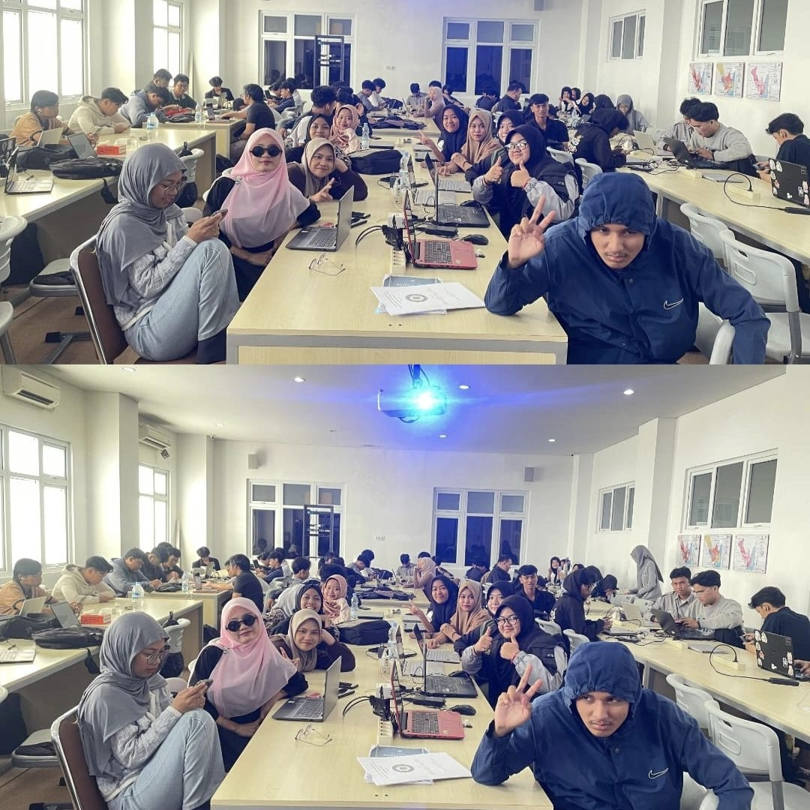
Grow through what you go through🌸🌬
🌿between the chaos of daylight and the silence of night, i’ve learned that life is not about rushing; sometimes we need to pause, listen to our soul, cherish the little things, and then move forward with softer, steadier steps